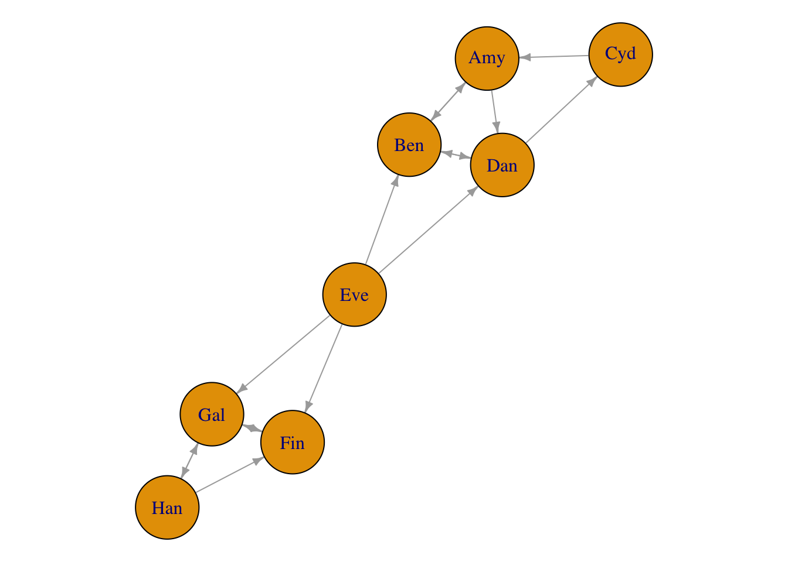
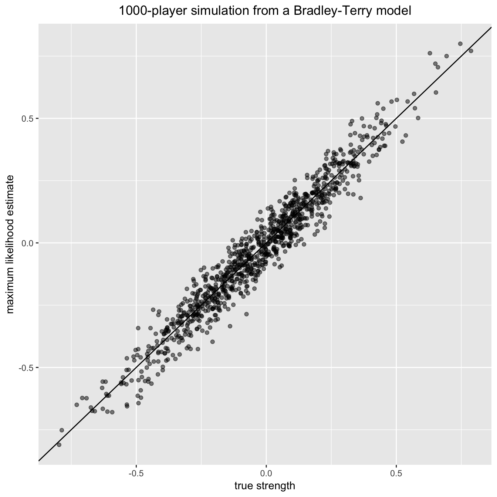

An R package for fitting the Bradley-Terry model to pair-comparison data, to enable statistically principled ranking of a potentially large number of objects.
Given a number of items for which we have pair-comparison data, the Bradley-Terry model assigns a ‘strength’ parameter to each item. These can be used to rank the items. Moreover, they can be used to determine the probability that any given item will ‘beat’ any other given item when they are compared. Further details of the mathematical model, and the algorithms used to fit it, are available in the package vignette.
The documentation website for this package can be found here (thanks to pkgdown)
The Bradley-Terry model
Details of the Bradley-Terry model are not presented here (due to GitHub’s inability to display equations). Instead, please refer to the vignette here or through the R console:
vignette("BradleyTerryScalable", package = "BradleyTerryScalable")Installing the package
# installing from CRAN
install.packages("BradleyTerryScalable")
# installing from GitHub
install.packages("devtools") # if required
devtools::install_github("EllaKaye/BradleyTerryScalable", build_vignettes = TRUE)library(BradleyTerryScalable)Preparing the data
The main model-fitting function in this package is btfit(). This function takes as its main argument an object of class btdata. To create a btdata object, use the function btdata(x).
The x argument to btdata can be one of four classes of object:
A matrix (either a base
matrixor a class from theMatrixpackage), dimension \(K\) by \(K\), where \(K\) is the number of items. The \(i,j\)-th element is \(w_{ij}\), the number of times item \(i\) has beaten item \(j\). Ties can be accounted for by assigning half a win (i.e. 0.5) to each item.A contingency table of class
table, similar to the matrix described in the above point.- An
igraph, representing the comparison graph, with the \(K\) items as nodes. For the edges:- If the graph is unweighted, a directed edge from node \(i\) to node \(j\) for every time item \(i\) has beaten item \(j\)
- If the graph is weighted, then one edge from node \(i\) to node \(j\) if item \(i\) has beaten item \(j\) at least once, with the weight attribute of that edge set to the number of times \(i\) has beaten \(j\).
- A data frame (
data.frameortibble), with three or four columns- If the data frame has three columns, then the first column must be the name of the first item, the second column must be the name of the second item, and the third column must be the number of times the first item has beaten the second item.
- If the data frame has four columns, then the first column must be the name of the first item, the second column must be the name of the second item, and the third column must be the number of times the first item has beaten the second item and the fourth column must be the number of times the second item has beaten the first item.
- In either of these cases, the data can be aggregated, or there can be one row per comparison.
- Ties can be accounted for by assigning half a win (i.e. 0.5) to each item.
We anticipate that the user may have data in a three-column data frame that does not match the description of the three-column data frame above. For example, the data frame could have one row per comparison, where the third column contains a code to indicate which of the two items won, say W1 if the item in column 1 won, W2 if the item in column 2 won and D if it was a tie/draw. Alternatively, the third column could contain the win-count, but only relative to the first item, i.e. 1 if the first item wins, 0 if it loses and 0.5 if there was a draw. In this case, the btdata function won’t know that a loss for the first item item should be counted as a win for the second item.
For the cases described in the previous paragraph, the BradleyTerryScalable package provides the codes_to_counts() function, which takes such three-column data-frames and returns a four-column data frame of the required format for passing to the btdata() function.
The BradleyTerryScalable package provides two toy data sets which we’ll use in this demonstration:
data(citations)
citations
#> citing
#> cited Biometrika Comm Statist JASA JRSS-B
#> Biometrika 714 730 498 221
#> Comm Statist 33 425 68 17
#> JASA 320 813 1072 142
#> JRSS-B 284 276 325 188
data(toy_data)
toy_data
#> player1 player2 outcome
#> 1 Cyd Amy W1
#> 2 Amy Ben D
#> 3 Ben Eve W2
#> 4 Cyd Dan W2
#> 5 Ben Dan D
#> 6 Dan Eve W2
#> 7 Fin Eve W2
#> 8 Fin Gal W2
#> 9 Fin Han W2
#> 10 Eve Gal W1
#> 11 Fin Gal D
#> 12 Han Gal W1
#> 13 Han Gal W2
#> 14 Amy Dan W1
#> 15 Cyd Amy W1
#> 16 Ben Dan D
#> 17 Dan Amy W2citations is in an appropriate format to pass to btdata(), whereas toy_data needs to be passed through codes_to_counts() first:
citations_btdata <- btdata(citations)
toy_data_4col <- codes_to_counts(toy_data, c("W1", "W2", "D"))
toy_btdata <- btdata(toy_data_4col, return_graph = TRUE) A btdata object is a list containing two or three elements:
-
wins: a matrix of the form described in the second bullet point above -
components: a list of the fully-connected components of the comparison graph (see the third bullet point above) -
graph: ifreturn_graph = TRUE, then theigraphobject of the comparison graph is returned, which can be useful for visualising the data.
library(igraph)
par(mar = c(0, 0, 0, 0) + 0.1)
plot.igraph(toy_btdata$graph, vertex.size = 28, edge.arrow.size = 0.5) 
Information about the btdata objects can be seen through the summary.btdata() method:
summary(citations_btdata)
#> Number of items: 4
#> Density of wins matrix: 1
#> Fully-connected: TRUE
summary(toy_btdata)
#> Number of items: 8
#> Density of wins matrix: 0.25
#> Fully-connected: FALSE
#> Number of fully-connected components: 3
#> Summary of fully-connected components:
#> Component size Freq
#> 1 1 1
#> 2 3 1
#> 3 4 1Note that components of size 1 will be filtered out in the MLE fit (see next section); the model doesn’t make sense for them.
select_components() can be used to create a subset of a btdata object. In our toy case, the following all give the same subset:
toy_btdata_subset <- select_components(toy_btdata, "3")
toy_btdata_subset <- select_components(toy_btdata, function(x) length(x) == 4)
toy_btdata_subset <- select_components(toy_btdata, function(x) "Cyd" %in% x)
summary(toy_btdata_subset)
#> Number of items: 4
#> Density of wins matrix: 0.4375
#> Fully-connected: TRUEAlternatively, set the subset argument in btfit().
Fitting the model
summary.btdata(object) gives information on whether or not the underlying comparison graph is fully connected. This affects the type of estimate available for the strength parameter.
- If the comparison graph is fully connected (i.e. if
Fully-connected: TRUEis printed), then the maximum likelihood estimate (MLE) for the Bradley-Terry model exists and is finite. - If the comparison graph is not fully connected (i.e. if
Fully-connected: FALSEis printed), then we cannot find the MLE for the full dataset. There are two alternatives:- Find the MLE on each fully connected component of the comparison graph (and note then that it is only meaningful to rank and compare items within the same component).
- Place a Bayesian prior on the model, then find the maximum a posteriori (MAP) estimate. This always exists and is finite. It gives a principled way of ranking and comparing all \(K\) items.
The function btfit() requires two arguments: the data (in the form of a btdata oject), and a, which controls whether the MLE or MAP estimate is returned.
- If
a = 1, the MLE is returned, either on the full dataset if the comparison graph is fully-connected, or else the MLE is found separately for each fully-connected component. - If
a > 1, the MAP estimate is returned, withaas the value of the shape parameter in the prior.
See ?btfit() or the Fitting the Bradley-Terry model section above for more details.
citations_fit <- btfit(citations_btdata, 1)
toy_fit_MLE <- btfit(toy_btdata, 1)
toy_fit_MAP <- btfit(toy_btdata, 1.1)btfit objects are lists, and they are not designed to be examined directly, but to be passed to other methods.
Methods for a btfit object
summary.btfit(), coef.btfit() and vcov.btfit()
The summary.btfit() method returns a list with
-
call: the call tobtfit() -
item_summary: a data frame with one row for each item in the fit (note that this can be fewer than the number of items in the data, if there were any components of size one, or if the fit was on a subset). Items are ranked in descending order within each component -
component_summary: a data frame with one row per component in the fit.
The standard errors are not returned by default (since the underlying vcov.btfit() function can be slow for large matrices), but can be included by setting SE = TRUE. It is also possible to set a reference item, and to return the summary for only a subset of components (see ?summary.btfit()).
The coef.btfit() method extracts the parameter estimates. This is the strength parameter, on the log scale, constrained (by default) such that the mean of the estimates is zero. By default it is a vector if btfit() was run on the full dataset, or a list of vectors otherwise, but there is also the possibility of returning a data frame by setting as_df = TRUE.
The vcov.btfit() method returns the variance-covariance matrix (or a list of these matrices by component), and also has ref and subset arguments (see ?vcov.btfit()).
summary(citations_fit)
#> $call
#> btfit(btdata = citations_btdata, a = 1)
#>
#> $item_summary
#> # A tibble: 4 x 3
#> component item estimate
#> <chr> <chr> <dbl>
#> 1 full_dataset JRSS-B 1.0604065
#> 2 full_dataset Biometrika 0.7897537
#> 3 full_dataset JASA 0.3095638
#> 4 full_dataset Comm Statist -2.1597241
#>
#> $component_summary
#> # A tibble: 1 x 4
#> component num_items iters converged
#> <chr> <int> <int> <lgl>
#> 1 full_dataset 4 2 TRUE
summary(toy_fit_MLE, SE = TRUE)
#> $call
#> btfit(btdata = toy_btdata, a = 1)
#>
#> $item_summary
#> # A tibble: 7 x 4
#> component item estimate SE
#> <chr> <chr> <dbl> <dbl>
#> 1 2 Han 0.69564153 0.9110076
#> 2 2 Gal 0.41253614 0.7675914
#> 3 2 Fin -1.10817768 1.0499275
#> 4 3 Cyd 0.59239992 0.9905958
#> 5 3 Amy 0.03250119 0.6990438
#> 6 3 Ben -0.24307179 0.9443103
#> 7 3 Dan -0.38182932 0.7124240
#>
#> $component_summary
#> # A tibble: 2 x 4
#> component num_items iters converged
#> <chr> <int> <int> <lgl>
#> 1 2 3 6 TRUE
#> 2 3 4 10 TRUE
coef(toy_fit_MAP)
#> Eve Cyd Han Amy Gal Ben
#> 1.90113420 0.47237293 0.24535391 -0.07655328 -0.10175687 -0.42296697
#> Dan Fin
#> -0.53638389 -1.48120003
vcov(citations_fit, ref = "JASA")
#> 4 x 4 sparse Matrix of class "dgCMatrix"
#> citing
#> cited JRSS-B Biometrika JASA Comm Statist
#> JRSS-B 0.005323938 0.001988435 . 0.001172936
#> Biometrika 0.001988435 0.003671841 . 0.001396292
#> JASA . . . .
#> Comm Statist 0.001172936 0.001396292 . 0.009638953
btprob() and fitted.btfit()
The btprob function calculates the Bradley-Terry probabilities that item \(i\) beats item \(j\). By default the result is a matrix if btfit was run on the full dataset, or a list of matrices otherwise, but there is also the possibility of returning a data frame by setting as_df = TRUE. The fitted.btfit() method functions similarly, except it returns the expected number of wins (see ?fitted.btfit()).
btprob(citations_fit)
#> 4 x 4 sparse Matrix of class "dgCMatrix"
#> citing
#> cited JRSS-B Biometrika JASA Comm Statist
#> JRSS-B . 0.5672532 0.67936229 0.9615848
#> Biometrika 0.43274683 . 0.61779270 0.9502388
#> JASA 0.32063771 0.3822073 . 0.9219605
#> Comm Statist 0.03841516 0.0497612 0.07803945 .
fitted(toy_fit_MLE, as_df = TRUE)
#> # A tibble: 8 x 5
#> component player1 player2 fit1 fit2
#> <chr> <chr> <chr> <dbl> <dbl>
#> 1 2 Han Gal 1.1406148 0.8593852
#> 2 2 Han Fin 0.8586132 0.1413868
#> 3 2 Gal Fin 1.6412871 0.3587129
#> 4 3 Cyd Amy 1.2728582 0.7271418
#> 5 3 Amy Ben 0.5684605 0.4315395
#> 6 3 Cyd Dan 0.7259617 0.2740383
#> 7 3 Amy Dan 1.2042516 0.7957484
#> 8 3 Ben Dan 1.0692677 0.9307323
simulate.btfit() and simulate_BT()
There are two functions to simulate data from a Bradley-Terry model. The S3 method simulate.btfit() takes a btfit object which has been fitted on one component (either the full dataset, or a one-component subset). The underlying function simulate_BT() takes an N matrix (i.e. where the \(i,j\)-th element is the number of times items \(i\) and \(j\) have been compared) and a vector pi, the strength parameters of a Bradley-Terry model (note that pi is not the same as the estimates in coef.btfit() and summary.btfit(), which are on the logarithmic scale). Both functions return a wins matrix by default, but can also be set to return a btdata object instead.
For example, we can simulate 100 new datasets from the fitted model for the small citations dataset:
citations_sim <- simulate(citations_fit, nsim = 100, seed = 1)
citations_sim[1:2]
#> $sim_1
#> 4 x 4 sparse Matrix of class "dgCMatrix"
#> citing
#> cited JRSS-B Biometrika JASA Comm Statist
#> JRSS-B . 286 316 285
#> Biometrika 219 . 495 725
#> JASA 151 323 . 817
#> Comm Statist 8 38 64 .
#>
#> $sim_2
#> 4 x 4 sparse Matrix of class "dgCMatrix"
#> citing
#> cited JRSS-B Biometrika JASA Comm Statist
#> JRSS-B . 291 315 273
#> Biometrika 214 . 511 723
#> JASA 152 307 . 811
#> Comm Statist 20 40 70 .As a bigger example, let’s simulate a single instance of a fairly sparse tournament with 1000 items (or ‘players’), and then fit the Bradley-Terry model to the resulting data:
library(Matrix)
library(dplyr)
library(ggplot2)
set.seed(1989)
n_items <- 1000
## Generate at random a sparse, symmetric matrix of binomial totals:
Nvalues <- rpois(n = n_items * (n_items - 1) / 2, lambda = 1)
notzero <- Nvalues > 0
Nmatrix <- Matrix(nrow = n_items, ncol = n_items)
ij <- which(lower.tri(Nmatrix), arr.ind = TRUE)[notzero, ]
Nmatrix <- sparseMatrix(
i = ij[, 1],
j = ij[, 2],
x = Nvalues[notzero],
symmetric = TRUE,
dims = c(n_items, n_items))
## Generate at random the (normalized to mean 1) 'player abilities':
pi_vec <- exp(rnorm(n_items) / 4)
pi_vec <- pi_vec / mean(pi_vec)
## Now generate contest outcome counts from the Bradley-Terry model:
big_matrix <- simulate_BT(pi_vec, Nmatrix, nsim = 1, seed = 1)[[1]]
big_btdata <- btdata(big_matrix)
## Fit the Bradley-Terry model to the simulated data:
the_model <- btfit(big_btdata, a = 1)
pi_fitted <- the_model $ pi $ full_dataset
## Plot fitted vs true abilities:
plot_df <- tibble(x = log(pi_vec[as.numeric(names(pi_fitted))]),
y = log(pi_fitted))
ggplot(plot_df, aes(x, y)) +
geom_point(alpha = 0.5) +
geom_abline() +
xlab("true strength") +
ylab("maximum likelihood estimate") +
ggtitle("1000-player simulation from a Bradley-Terry model") +
theme(plot.title = element_text(hjust = 0.5))
Further information
All code for the package is available at https://github.com/EllaKaye/BradleyTerryScalable and a documentation website is available at https://ellakaye.github.io/BradleyTerryScalable